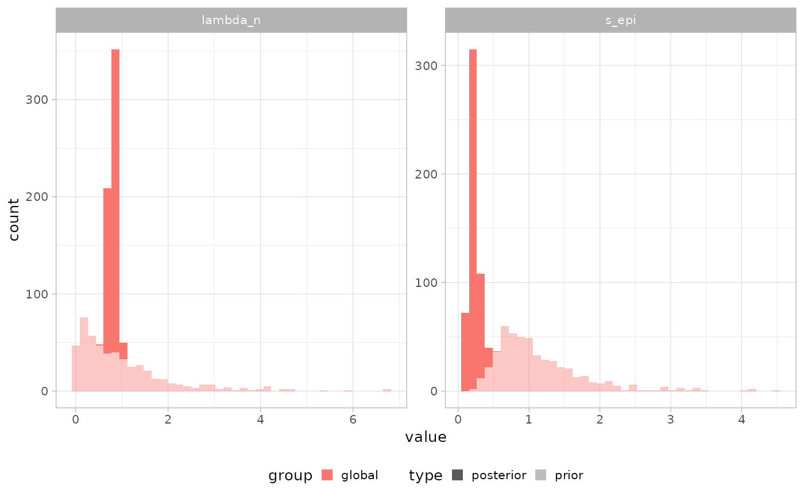

Plot posterior and prior distributions of the unified multirates model's parameters.
Source:R/plot_functions.R
plot_inference.RdPosterior and prior draws histograms are plotted for any required parameter,
using the raw ("param" family) rows of get_posterior_multirates()'s output.
Arguments
- x
PEPI_Multirates object, after
get_posterior_multirates().- params
A vector of canonical parameter names (e.g. "lambda_n", "s_driver").
- groups
A vector of groups to include (wt/driver/driver_n/driver_p/dc/clade_wt/global).
Examples
# \donttest{
sim = simulate_multirates_tree(
sampling_times = c(3, 6, 9), tmrca = 1, t_min = 0,
lambda_n = 1, s_epi = 0.15, omega_n_wt = 5e-3, omega_p_wt = 2e-3,
drivers = list(list(id = "KRAS", t_driver = 2, s_driver = 0.3,
omega_n_driver = 5e-3, omega_p_driver = 2e-3,
ms_driver = -0.5, sigma_driver = 0.5,
alpha_n_driver = 1, beta_n_driver = 10, alpha_p_driver = 1, beta_p_driver = 10)),
clades_wt = list(list(id = "c1", t_clade_wt = 1.5)),
mu = 1e-7, l = 2.7e9, kappa = 20, sigma_count = 0.1, seed = 42
)
x = init_multirates(sim$tables, m_trunk = sim$truth$m_trunk)
x = fit_multirates(x, cmdstan_path = cmdstanr::cmdstan_path(),
method = "variational", ndraws = 500, seed = 45,
mu = 1e-7, l = 2.7e9, t_min = 0, ms_epi = 0, sigma_epi = 0.5,
alpha_lambda = 1, beta_lambda = 1, alpha_n_wt = 1, beta_n_wt = 10,
alpha_p_wt = 1, beta_p_wt = 10, min_kappa = 5, max_kappa = 200,
min_sigma_count = 0.01, max_sigma_count = 1)
#> CmdStan path set to: /home/runner/.cmdstan/cmdstan-2.39.0
#> Init values were only set for a subset of parameters.
#> Missing init values for the following parameters:
#> lambda_n, s_epi, omega_p_wt, omega_n_wt, bc_wt, U_wt, W_wt, bc_clade_wt, s_driver, bc_driver, U_driver, W_driver, s_driver_n, t_driver_n, bc_driver_n, s_driver_p, t_driver_p, bc_driver_p, s_dc, delta_t_dc, bc_driver_dc, bc_clade_dc, U_dc, W_dc, omega_p_dc, omega_n_dc, omega_p_driver, omega_n_driver, kappa, sigma_count
#>
#> To disable this message use options(cmdstanr_warn_inits = FALSE).
#> ------------------------------------------------------------
#> EXPERIMENTAL ALGORITHM:
#> This procedure has not been thoroughly tested and may be unstable
#> or buggy. The interface is subject to change.
#> ------------------------------------------------------------
#> Rejecting initial value:
#> Error evaluating the log probability at the initial value.
#> Exception: lub_constrain: lb is 4.87392, but must be less than 3.000000 (in '/tmp/RtmpAjDVJG/model-1be660c054e.stan', line 353, column 2 to column 81)
#> Rejecting initial value:
#> Error evaluating the log probability at the initial value.
#> Exception: lub_constrain: lb is 5.59741, but must be less than 3.000000 (in '/tmp/RtmpAjDVJG/model-1be660c054e.stan', line 353, column 2 to column 81)
#> Rejecting initial value:
#> Error evaluating the log probability at the initial value.
#> Exception: lub_constrain: lb is 6.88754, but must be less than 3.000000 (in '/tmp/RtmpAjDVJG/model-1be660c054e.stan', line 353, column 2 to column 81)
#> Gradient evaluation took 8.6e-05 seconds
#> 1000 transitions using 10 leapfrog steps per transition would take 0.86 seconds.
#> Adjust your expectations accordingly!
#> Begin eta adaptation.
#> Iteration: 1 / 250 [ 0%] (Adaptation)
#> Iteration: 50 / 250 [ 20%] (Adaptation)
#> Iteration: 100 / 250 [ 40%] (Adaptation)
#> Iteration: 150 / 250 [ 60%] (Adaptation)
#> Iteration: 200 / 250 [ 80%] (Adaptation)
#> Iteration: 250 / 250 [100%] (Adaptation)
#> Success! Found best value [eta = 0.1].
#> Begin stochastic gradient ascent.
#> iter ELBO delta_ELBO_mean delta_ELBO_med notes
#> 100 -4217.949 1.000 1.000
#> 200 -806.620 2.615 4.229
#> 300 -315.630 2.262 1.556
#> 400 -212.549 1.817 1.556
#> 500 -161.714 1.517 1.000
#> 600 -126.474 1.310 1.000
#> 700 -90.461 1.180 0.485
#> 800 -78.260 1.052 0.485
#> 900 -74.109 0.941 0.398
#> 1000 -67.179 0.858 0.398
#> 1100 -62.939 0.764 0.314 MAY BE DIVERGING... INSPECT ELBO
#> 1200 -58.695 0.349 0.279
#> 1300 -57.094 0.196 0.156
#> 1400 -55.924 0.149 0.103
#> 1500 -54.715 0.120 0.072
#> 1600 -53.765 0.094 0.067
#> 1700 -53.733 0.054 0.056
#> 1800 -52.085 0.042 0.032
#> 1900 -51.622 0.037 0.028
#> 2000 -50.928 0.028 0.022
#> 2100 -51.332 0.022 0.021
#> 2200 -51.179 0.015 0.018
#> 2300 -51.188 0.013 0.014
#> 2400 -50.887 0.011 0.009 MEDIAN ELBO CONVERGED
#> Drawing a sample of size 500 from the approximate posterior...
#> COMPLETED.
#> Finished in 0.3 seconds.
x = get_posterior_multirates(x)
library(ggplot2)
plot_inference(x,params = c("lambda_n","s_epi"))

# }